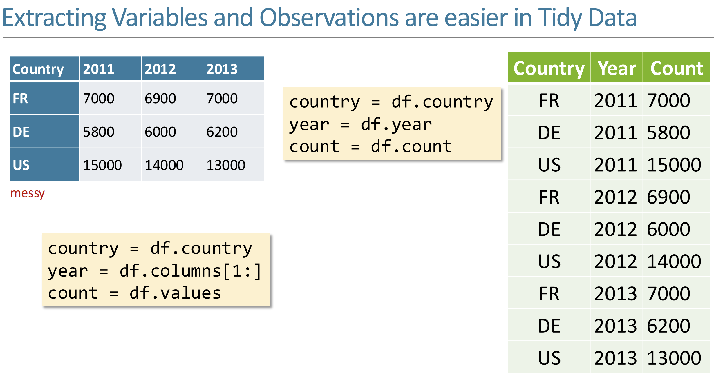
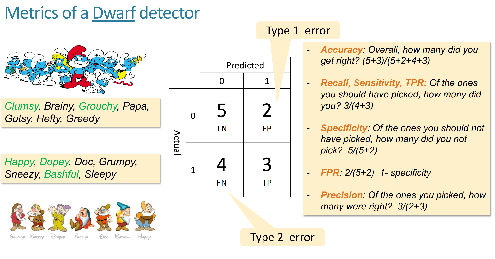
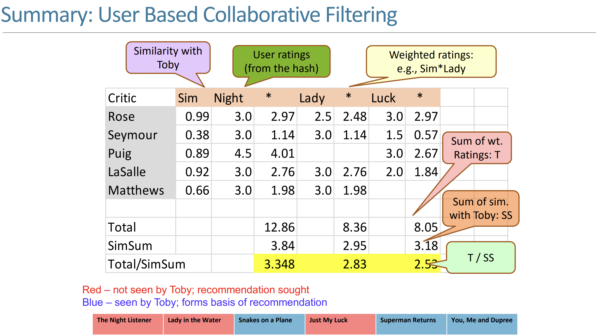

Data Analysis and Machine Learning¶
约 2468 个字 34 行代码 19 张图片 预计阅读时间 7 分钟
Overview
国际化拔尖人才培养课程：机器学习在数据分析和自然语言处理中的应用。讲得很浅，类似通识课的难度，连写代码的任务都没有。
"Eighty percent will be course lessons, and twenty percent will be life lessons." -- Raja Sooriamurthi
Lec 1: Introduction¶
Real World Problem Solving (From abstract world to real world):
- Puzzled-Based Learning: Domain Independent, Logical Reasoning
- System-based Learning: Reasoning with domain-specific methods (Learn physics knowledge to solve physics problems, etc.)
- Project-based Learning: Working with teams, Dealing with uncertainty
例如，问题要求计算\(100!\)，重要的不是答案，而是计算过程。例如说，可以立刻确定结果末尾有两个零，由100带来的。（好难绷的例子）
Learing occurs when someone wants to learn, not when someone wants to teach. -- Roger Schank
Information System¶
Class Core, Ultimate Goal: Info System is all about adding value to organizations and use technology.
Machine Learning永远不会孤立存在，一般发生于某种business context下，用于添加value，例如说医院预测预约者失约的概率。（个人理解：强调实际用途？）因此面对ML问题，从value的角度思考。

如图，从数据中提取Value的过程，其中Visualize（可视化）代表Data Analysis，Modeling（建模）代表Machine Learning。
Use of Data¶
Visualization and Prediction.
Process when solving a problem:
- Consider whether the problem is worth solving
- Invention: WHAT CAN I DO?
Tools¶

"Matplotlib is too low-level"
Machine Learning¶
Learning: Improvement.
eg
-
Recommendation System: Netflix
-
Association: People who read this book also read...
-
Email spam classification
Lec2: Computational Thinking & Tidy Data¶
If there is no action, there is no value.
计算思维¶
四个方面：
- Decomposition: Divide and Conquer
- Abstraction: Separate the "What" from the "How"
- Recognition: Look for similarities between problems
- Generalization: Adapt previous solutions to new problems
- Computation: How to express solution unambiguously
Abstraction¶
CS61A讲过了（
This is the approach of stratified design, the notion that a complex system should be structured as a sequence of levels that are described using a sequence of languages. -- Abelson and Sussman
即复杂的系统在设计/阐述时应该被分层，每一层用不同的语言描述。
e.g. Internet的七层结构，Git分为Porcelain（面向用户）和Plumbing（Core Git）两层。
EFFECTIVE VISUALIZATION¶
Tidy Data: 数据的组织格式，使得数据更容易被处理。（例如用表格）
e.g.
即便是表格也有messy的，如下图，蓝色表格对人类来说是更可读的，而绿色（Tidy Ver.）对计算机更友好。

Data Analysis中注意的三个属性：
- Variable: 和编程语言中的变量不同，这里指的是可以被测量的性质或量
- Value: 某个时刻测量Variable的结果
- Observation: The values of several variables measured under similar conditions.
RESHAPING DATAFRAMES¶
- Column headers are values, not variable names
- Row headers are Observations.

Lec 3: Reshape Data - Introduction to Visualization¶
Creativity, Curiosity, and Compassion
e.g.
Subway Map: put you in other's shoes.
Data gathered: About Movies.

面对这些数据，我们可以提出很多问题，例如：性别不同的人分别喜欢看什么电影？年龄对电影评价的影响如何？等等。然后可以造一个Tidy的表格：
| MovieID | Title | Male_Rating | Female_Rating | Diff |
Effective Mapping¶
Types of Data:

-
N(Normals)
- Operation: =, !=
- e.g.: 邮政编码，血型，瞳孔颜色，种族，政党
- 根本无法量化的特性
-
O(Ordered)
- Operation: =, !=, >(<)(=)
- e.g.: "Low/High/Medium Income Level". 满意程度（高，中，低）
- 具有分级（Order）的大致范围
-
Q(Interval - Location of zero arbitrary - 0 只是一个标记点，实则也是一个该量的值)
- Operation: =, !=, >(<)(=), -
- e.g.: temperature（摄氏度与华氏度）, pH, SAT score
-
Q(Ratio - Location of 0 fixed - 0 代表该量的完全缺失)
- Operation: =, !=, >(<)(=), -, /
- e.g.: Physical measurements(mass, length, 开尔文温度)
- 换句话说，不存在负数（？）
Lec 4: Overview of Machine Learning¶
Value Proposition (end-to-end)
- Pain Point
- Problem Formulation (measure the pain)
- Solution Development
- Deployment
- Evaluation (reduction in pain)
- Maintenance / Sustainability
Measurement of learning¶
用P表示对某程序的表现衡量，定义经历E和某类任务T，则\(P(T,E+\Delta) > P(T,E)\)。
ML TASKS:
-
Classification / Regression
- assign a label (classification) or numerical value (regression) to an unknown entity based on a set of features and known labels (or numerical values)
-
Clustering
- group a bunch of entities that share common features
-
Optimization
- from amongst a set of alternatives pick the “best” while balancing competing value metrics
-
Forecasting
- based on the past, forecast the future
-
Recommendation
- based on prior behavior rank order candidate preferences
-
Association
- identify which items co-occur e.g., bread and peanut butter
如何评判ML TASKS完成的好坏？（mea
- 需要确定评判的指标（e.g.
Types of Learning¶
-
Supervised Learning
- We know both the input and the output
- 'Teacher'
-
Unsupervised Learning
- We only know the input
-
Reinforcement
- We know what is desired (correct) and what is not desired
- the ‘credit/blame assignment’ problem
Pull out features from data, and then feed them into a model.
Two phases of ML:
- Training (with training data)
- Testing (with testing data)
Lec 5: Evaluating a Classifier¶
Cross-Validation AND DATA LEAKAGE¶
Cross-Validation¶
没太听懂这块，这个Cross-Validation是用来减少“运气”对结果的影响，to measure authentic learning.

Data Leakage¶
Leakage: Testing data has overlapped with training data.
The twain shall never meet.
cLASSIFIER EVALUATION¶

形似倒排索引那一课的表格。
Lec 6: Decision Trees¶
决策树每个节点是一个问题，节点的每个子节点是一个答案，最终叶子节点是一个决策。
Good Decision Tree: Wide and Shallow.
建树方法：Brutal Force & Greedy Algorithm.
Recursive Partitioning¶

对于每个predictor variable，选择一个value，然后根据这个value的值将数据分为两部分，然后在purity达到最大时递归。
这个 Split 的过程就可以用 Decision Tree 来表示，分成的几部分就用几个叶子节点表示，最终得到一个可用于 Classification 的 Decision Tree。
Purity¶
- Misclassification Error Rate: \(1 - max(p1, p2, ..., pk)\)
- GINI（基尼系数）: \(1 - (p1^2 + p2^2 + ... + pk^2)\)（If the partition is fully homogeneous, \(GINI = 0\)）
- 一组父子关系（也就是一次Split）的GINI Index就是所有子节点GINI Index的加权平均。（权重为子节点数据集的大小占比）
- 叶子节点的GINI Index越小，说明这个叶子节点的数据越纯，如果降为0，说明这个叶子节点的数据完全纯净（全部属于同一类）。
- Entropy: \(-p1log(p1) - p2log(p2) - ... - pklog(pk)\)
- \(p_k\) 是在每个决策后的数据集（即每个叶子节点）中，随机挑选一个数据，其属于第k类的概率。
eg

Random Forest¶
在建森林时的随机性：
-
Bagging: 从原始数据集中随机抽取一部分数据，然后用这部分数据建立一个决策树。
- 经验上取⅔的数据
-
Feature: 从所有的特征中随机选取一部分特征，然后用这部分特征建立一个决策树。
- 经验上取\(\sqrt{p}\)个特征
Ensemble Learning¶
以 error rate 而言，Learner 可以被分为 Strong, Bad, Weak.
Ensemble Learning: 通过组合多个 Weak Learner 来构建一个 Strong Learner。
eg
以这个判断垃圾邮件的 Classifier 为例，我们仅有的特征是 Lottery（彩票）和 Sale 这两个词在邮件中出现的次数。我们要对这个 Classifier 建一个决策树。


这里value的两个分量就是当前节点对应情况下的 Spam/Ham 个数。
Bagging(Bootstrap Aggregating)¶
从原始数据集（Observations）中随机抽取一部分数据，然后用这部分数据建立一个决策树（Weak Learner）。
Weak Learner 通过投票（VOTE）合成 Strong Learner。（从图像上讲，如果某一区域被超过一半的决策树判断为 Spam，那么这个区域就鉴定为 Spam）
这里的 Vote 可以理解为加权投票，即每个决策树的权重不同。

Boosting (AdaBoost(Adaptive Boosting))¶
为每个数据点赋予一个权重，每次建树（即 Weak Learner）时，对于错误鉴定的数据点，增加其权重，在此基础上接着新建 Weak Learner 与决策树。

类似 Bagging 的投票，这里需要评判每个 Weak Learner 的权重。
使用 log-odds(accuarcy) 函数，根据 Learner 的准确率评判每个 Weak Learner 的权重：
- \(log-odds(accuarcy) = log(\frac{accuarcy}{1-accuarcy})\)

Sciktlearn-demo¶
概率论基础知识：

使用 MNIST 数据集，对数字进行鉴别。
每个数字是一个 28x28 符号组成的图片，共有 784 个 feature，每个特征是一个格子里的符号。
Lec 7: Recommender System: User-based and Item-based¶
-
Apply Machine Learning: How?
- 第一步是分辨利益相关者（Stakeholder）：Producer, Consumer, Manager
- 考虑这些利益相关者的价值主张（Value Proposition）
-
Use specific method/task
- Classification ... and so on
这一节课就探讨一下 Recommendation 的实际原理。
intro
The Long Tail Effect:
- Small number of best-selling products
- Large number of products selling in small quantities
Recommendation method¶
-
Hand Curated (人工推荐)
- 人工推荐，例如“大家都在看”
- 实则是没有考虑到当前用户的 Preference
-
Simple Aggregation （简易聚合）
- 例如 Amazon 的“Customers who bought this item also bought...”
- 仅仅是根据购买记录进行推荐
-
Personalized
Collaborative Filtering¶
Distance/Similarity Metrics¶
\(sim(u, v) = \frac{1}{1 + d(u, v)}\)
- Euclidean Distance
- Manhattan Distance
- Pearson Coefficient
- Tanimoto Coefficient
- Jaccard Distance (Similarity of sets): \(\frac{A \cap B}{A \cup B}\)
User-based¶
可使用：User Rating Matrix
- 横坐标是 Item，纵坐标是 User
- 每个格子是 User 对 Item 的评分

Drawback：Item 必须是 Users 共有的，例如说都看过一部电影，这是很难收集的。
Item-based¶
- 横坐标是需要被推荐的 Item，纵坐标是已经被评分的 Item

- 这里紫色背景的数据是这一列列头的电影（属性）和这一行行头的电影（属性）的相似度
Content-based¶
每个人对电影的不同标签有不同的 Rate，电影本身也在这些标签上有不同的 Rate，相同的标签 Rate 相乘，得到 User 在该标签上的评价（Score），将所有标签的评价加和，得到 User 对电影的评价（实则是一个矩阵乘，见下图）

Latent Factor Based¶
Lec 8¶
Alternating Least Squares¶
何时停止迭代？有下面三种情况：
- 迭代一段时间后停止
- 迭代一定次数后停止
- 计算每次迭代后与实际值的差距，当差距小于某个阈值时（或者误差不再减小了）停止
Lec 9: Optimization (Genetic Algorithm)¶
Intro: CSP
约束满足问题：我们被提供：
- 一系列变量
- 每个变量的取值范围
- 一系列约束限制了这些变量的取值
我们需要求得：
- 每个变量合适的取值，使得所有的约束条件都被满足
一些变种问题
- 这样的取值（解）是否存在
- 找到一些解
- 找到所有解
- 在某个条件下，找到最优解
与 Constraint Satisfaction Problem 不同，Optimization Problem 还需要进行解的 质量评估（Quality Measure），有时会要求一个评估函数（Evaluation Function）。
真实案例：拍卖车的最佳分配¶
Lec 10: Summary¶
Research 1¶
def one_hot_encoding(nominals):
'''
Convert a set of nominals to a set of binary variables
one_hot_encoding(['alpha','beta', 'gamma'] ->
[['alpha', [1, 0, 0]], ['beta', [0, 1, 0]], ['gamma', [0, 0, 1]]]
'''
return [[word, [1 if nominals.index(word)==i else 0 for i in range(len(nominals))]] for word in nominals]
one_hot_encoding(['alpha','beta', 'gamma'])
# >>> [['alpha', [1, 0, 0]], ['beta', [0, 1, 0]], ['gamma', [0, 0, 1]]]
混淆矩阵（Confusion Matrix）：
- True Positive（TP）：真正类。样本的真实类别是正类，并且模型识别的结果也是正类。
- False Negative（FN）：假负类。样本的真实类别是正类，但是模型将其识别为负类。
- False Positive（FP）：假正类。样本的真实类别是负类，但是模型将其识别为正类。
- True Negative（TN）：真负类。样本的真实类别是负类，并且模型将其识别为负类。
def confusion_matrix( actual, predicted):
'''
Given the actual values and predicted values generate a confusion matrix
Actual
Predicted TN FP
FN TP
[[ TN FP] [ FN TP]]
'''
TN = 0
FN = 0
TP = 0
FP = 0
assert len(actual)==len(predicted)
for i in range(len(actual)):
if actual[i]==1 and predicted[i]==1:
TP+=1
elif actual[i]==1 and predicted[i]==0:
FN+=1
elif actual[i]==0 and predicted[i]==0:
TN+=1
elif actual[i]==0 and predicted[i]==1:
FP+=1
return [[TN, FP], [FN, TP]]